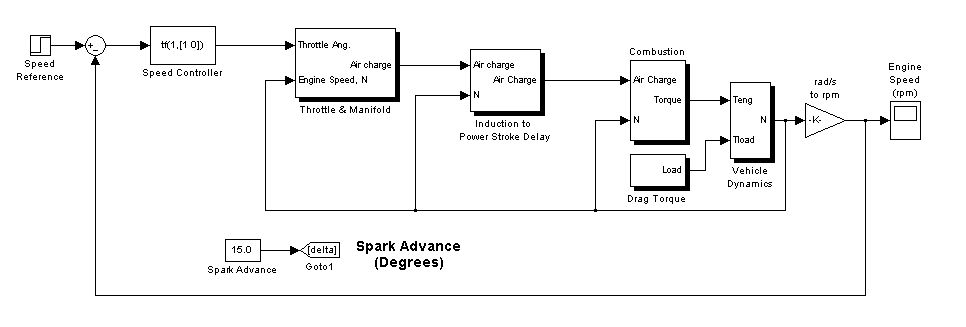
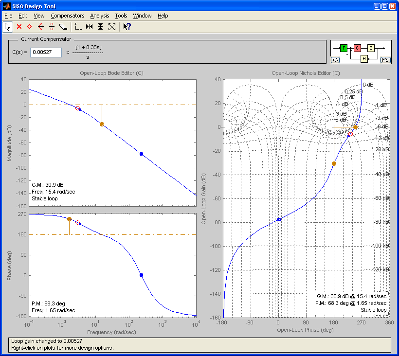
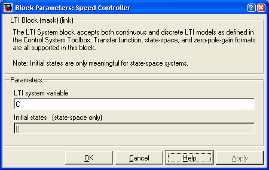
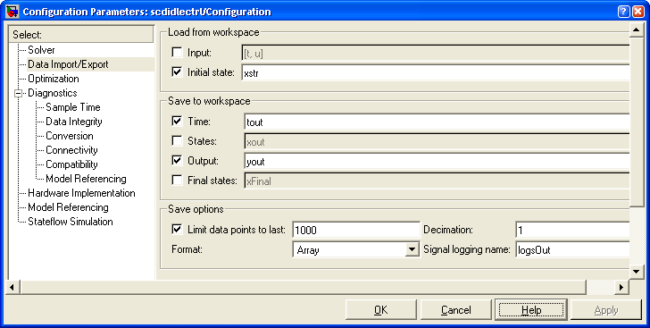
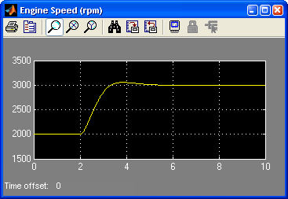

This example computes a linear model of the engine between the Throttle Angle and Engine Speed for the purpose of designing a speed controller. Open the model using the command:
scdspeedctrl
The linearization is a function of the operating point of the Simulink model. An operating point specification object allows for the specification of the desired operating point.
opspec = operspec('scdspeedctrl')
Operating Specificaton for the Model scdspeedctrl.
(Time-Varying Components Evaluated at time t=0)
States:
----------
(1.) scdspeedctrl/Speed Controller/Internal
spec: dx = 0, initial guess: 8.96
(2.) scdspeedctrl/Throttle & Manifold/Intake Manifold/p0 = 0.543 bar
spec: dx = 0, initial guess: 0.543
(3.) scdspeedctrl/Vehicle Dynamics/w = T//J w0 = 209 rad//s
spec: dx = 0, initial guess: 209
Inputs: None
Outputs: None
This example finds a steady state condition at 2000 RPM. Enforce the 2000 RPM specification by finding the steady state condition since the initial reference signal is at 2000 RPM using the command FINDOP.
op = findop('scdspeedctrl',opspec);
Operating Point Search Report:
---------------------------------
Operating Point Search Report for the Model scdspeedctrl.
(Time-Varying Components Evaluated at time t=0)
Operating point specifications were successully met.
States:
----------
(1.) scdspeedctrl/Speed Controller/Internal
x: 8.98 dx: 0 (0)
(2.) scdspeedctrl/Throttle & Manifold/Intake Manifold/p0 = 0.543 bar
x: 0.544 dx: 2.84e-012 (0)
(3.) scdspeedctrl/Vehicle Dynamics/w = T//J w0 = 209 rad//s
x: 209 dx: -8.48e-012 (0)
Inputs: None
Outputs: None
Compute the open loop plant model, P, and initial contoller, C, using the operating point and the GETLINPLANT command.
[P,C]=getlinplant('scdspeedctrl/Speed Controller',op);
The derived plant model, P, has the negative feedback sign embedded in the linearization. Therefore, when launching the SISO Tool take the negative of plant model.
sisotool(-P,C);
Use the SISO Tool to design a feedback controller with a smooth, non-overshooting rise time.
C
Zero/pole/gain:
0.0018222 (s+2.89)
------------------
s
To test the controller in the Simulink model, first specify the newly designed compensator in the block dialog.
Next, recompute the steady state operating point given the new controller
op = findop('scdspeedctrl',opspec);
Operating Point Search Report:
---------------------------------
Operating Point Search Report for the Model scdspeedctrl.
(Time-Varying Components Evaluated at time t=0)
Operating point specifications were successully met.
States:
----------
(1.) scdspeedctrl/Speed Controller/Internal
x: 124 dx: 0 (0)
(2.) scdspeedctrl/Throttle & Manifold/Intake Manifold/p0 = 0.543 bar
x: 0.544 dx: 2.21e-013 (0)
(3.) scdspeedctrl/Vehicle Dynamics/w = T//J w0 = 209 rad//s
x: 209 dx: 6.6e-013 (0)
Inputs: None
Outputs: None
Extract the Simulink model's initial conditions from the operating point.
[x,u,xstr] = getxu(op);
Use the initial condition structure, xstr, to set the initial state of the Simulink model.
The model is now ready for simulation.
